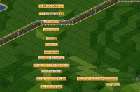
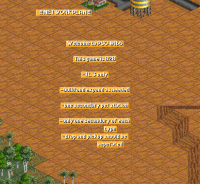
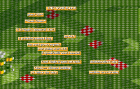
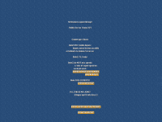

Chaos
Chaos games can consist of pretty much anything, but generally it is an organically growing network which just gets messier and messier over time, eventually resulting in a rebuild and then getting messier again. A lot of chaos viabilty depends on which parts of the plan do you specify and which you leave as free or "up to builders". Generally chaos is only used on the ProZone where people have at least some basic habits of our building style so we can expect what they would build. The idea behind Chaos is to make a more realistic build up of the network where you don't have a Mainline with hardly any trains on it right after the Plan is chosen.
| PSG 90 | Download: Public Server Game 90 Final / Archive entry for this game |
 |
This is how it ends when the plans answers all questions: Any. A nice relaxing game overall. |

| PSG 166 | Download: Public Server Game 166 Final / Archive entry for this game |
 |
Another chaos game which ended up quite nicely as the ML structured quite quickly. |

| PSG 181 | Download: Public Server Game 181 Final / Archive entry for this game |
 |
Here we experienced what it means to have a total mess on our network, but then we rebuilt vast majority of it, which let us to play the game some more. As there was no planned ML structure, we could add various hubs and create new connections which helped us handle the situation. Amazing output of chaos for a lot of effort and fun while building. |

| PSG 231 | Download: Public Server Game 231 Final / Archive entry for this game |
 |
What is a better way to test a new train set than having a random chaos game? |